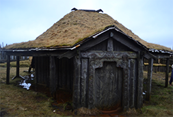
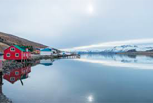

MAP

EAST
Höfn
Between Höfn and Djúpivogur, curious visitors will arrive at what appears to be a remote Viking villagein pristine condition. In reality, it is a film set for an Icelandic movie that was never filmed, but you’d definitely be forgiven for mistaking it for the real thing. The most striking feature of the village is the buildings, which ape the architecture of the period magnificently. Guests can pry open the wooden doors and find themselves within a range of rooms that look almost indistinguishable from the real thing. But this is not the only piece of period detail; the settlement also comes equipped with a dungeon located beneath an enormous artificial boulder. (Lonely Planet,2015)
Stokksnes

Stokksnes peninsula in Southeast Iceland, is one of the country’s most breathtaking mountains. With peaks reaching up to 454 metres (1490 ft), steep cliffs rising from the sides of a stunning lagoon, and black sand beaches all around, it promises to blow away anyone with an appreciation of stark natural beauty. The best ways to visit Stokksnes would be to rent a car or take a Ring Road tour.Slightly off the beaten track, Stokksnes is less ‘touristy’ than many of Iceland’s other mountains, making it popular with avid photographers.(Lonely planet,2015)
Kollumúli

Kollumúli, (602 m) a spur with high cliffs at the outer end of the peninsula between Vopnafjörður and Héraðsflói. Bjarnarey island offshore.
Eskifjörður
Eskifjordur is a fishing town of roughly 1100 people in East Iceland. The seafaring museum is worth a visit, located in an old trade house, built in 1816. There you can see artefacts of seafaring and fish working in the Eastern Fjords, bearing witness to the lives of the people in former times.(Lonely Planet,2015)